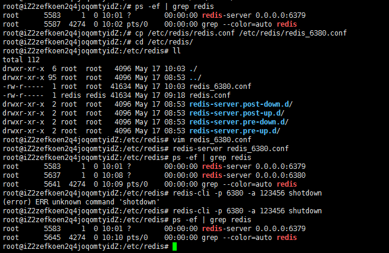
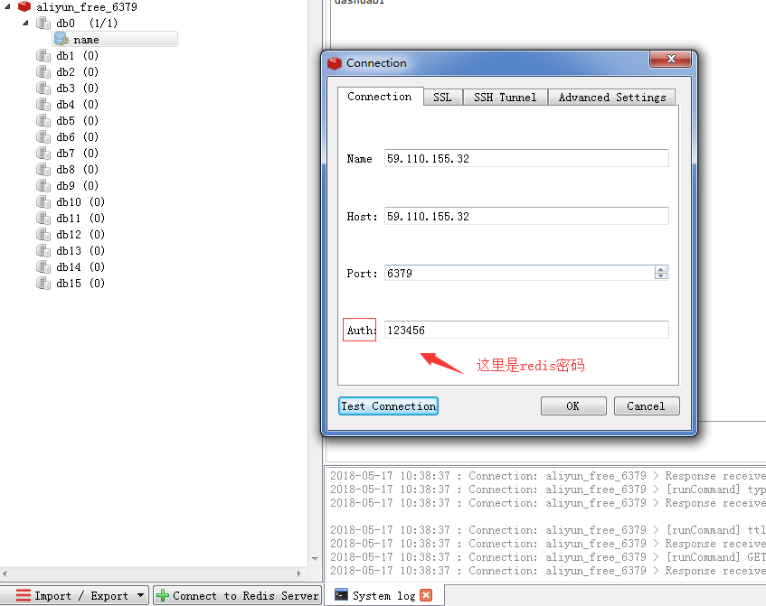

注：下面$符号后面跟的都是命令！
前言
空闲时间，充实自己。从零开始重新认识redis。
What is Redis?
开源，原子性，速度快。
安装Redis
系统环境
阿里云服务器 Ubuntu 16.04.3 LTS
安装Redis，基础配置，使用
1.安装redis，使用以下命令1
2$ sudo apt-get update
$ sudo apt-get install redis-server
ps:安装完成后，通过命令whereis redis找到redis相关文件在哪,通常是在/etc/redis
2.配置，让客户端可以远程访问1
$ vim /etc/redis/redis.conf
修改下面两个参数[bind和daemonize]：1
2
3
4# bind 127.0.0.1
bind 0.0.0.0 # 注释掉`bind 127.0.0.1`这行，加上`bind 0.0.0.0`，让客户端可以远程访问
daemonize yes # 修改这一项，no改为yes，让redis在后台运行（以守护进程方式运行）
requirepass 123456 # 设置redis密码为：123456
ps:如果不远程访问，可跳过这一步
3.启动Redis
直接启动1
$ redis-server /etc/redis/redis.conf # 根据配置文件启动某个redis，这里启动默认的，端口为6379
4.查看 redis 是否启动？1
$ redis-cli
以上命令将打开以下终端：1
redis 127.0.0.1:6379>
上面127.0.0.1 是本机 IP ，6379 是 redis 服务端口。现在我们输入 PING 命令。1
2redis 127.0.0.1:6379> ping
PONG
以上说明我们已经成功安装了redis。
5.关闭Redis1
2
3$ ps -ef | grep redis # 查看已启动的redis
$ redis-cli -p 6379 -a 123456 shutdown # 通过客户端关闭端口为6379,密码为123456的redis
$ kill -9 5311 # 通过杀进程的方式关闭指定redis实例
6.同一台机器启动多个实例redis
这里，方便学习，我们创建一个端口号为6380的redis实例。具体操作步骤如下：
1 | $ ps -ef | grep redis # 这里查看redis进程，是没有6380的 |
ps:
vim redis_6380.conf:需要修改以下4点
1 | port 6380 # Redis监听端口 |
附上新建redis实例操作截图：

使用Redis可视化工具远程连接
可视化工具：redis desktop manager
ps:工具自行下载安装，连接。百度就好了，很简单。注意一点，如果设置了redis密码，连接时记得填写Auth项。如下图：

总结
一般可视化工具只是拿来查看数据。涉及到redis命令，比如get，set等，还是要自己在终端多敲一下，熟悉起来也更快！